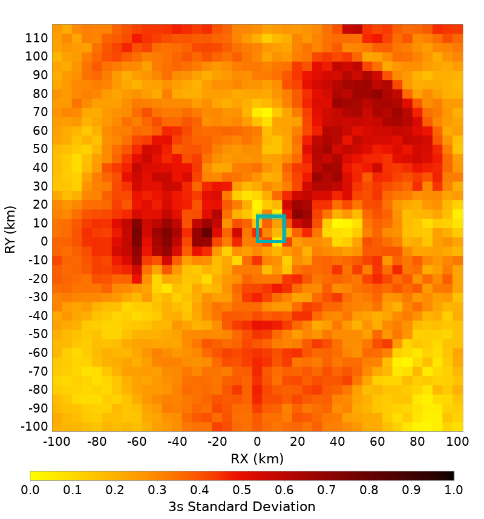

Bruce 4682, M6.6, Reverse, Dip=45, Ztor=3 Spatial Distributions
RSQSim Catalog Details
Table Of Contents
Full Spatial Distributions
(top)
| Period | Ln(Median) | Standard Deviation |
|---|
| 2 s | |  |
| 3 s | |  |
| 5 s |  | |
| 7.5 s |  |  |
| 10 s |  |  |
Center Third Hypocenter Spatial Distributions
(top)
| Period | Ln(Median) | Standard Deviation |
|---|
| 2 s |  |  |
| 3 s | |  |
| 5 s |  |  |
| 7.5 s |  |  |
| 10 s |  |  |